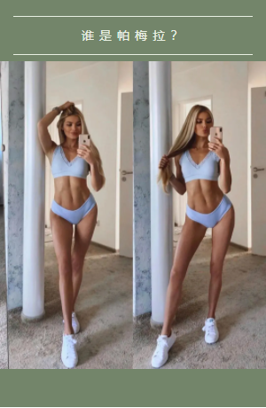
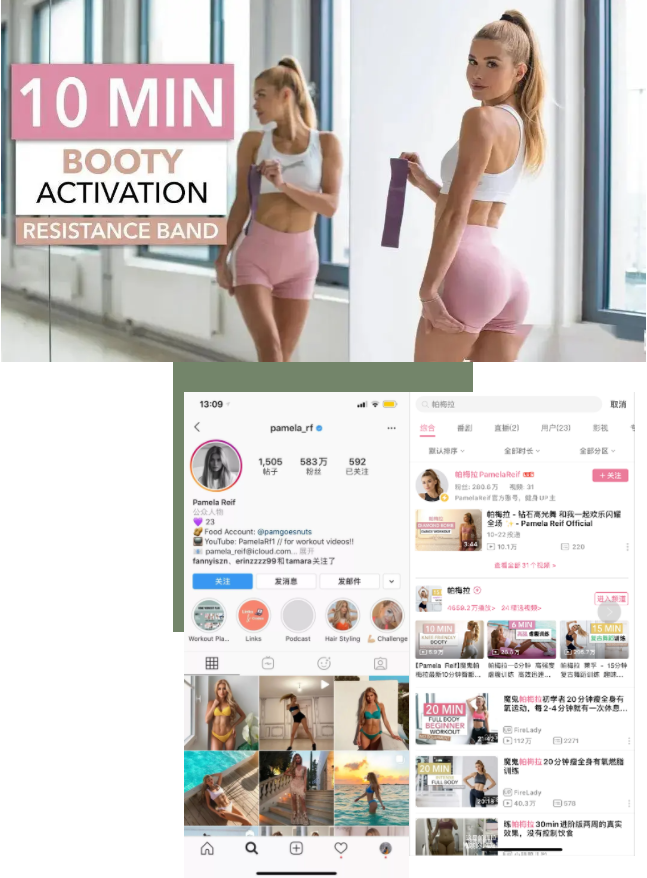
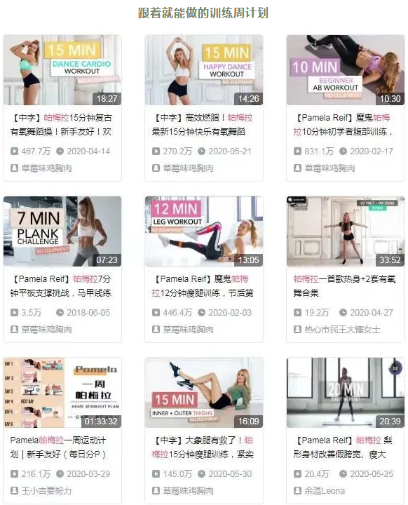
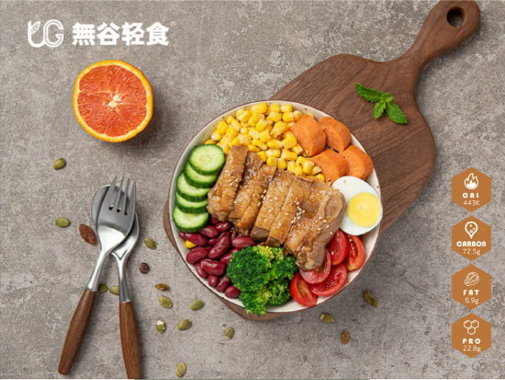

- 1
- 2

 合作条件
合作条件
 加盟流程
加盟流程
 服务支持
服务支持
 品牌优势
品牌优势
-
“人间AI”帕梅拉，人称“魔鬼训练师”，跟做15分钟真能消耗120卡？
-
之前火爆ins、油管等各大网站的“帕梅拉”减肥大法你有了解过吗？
据说“老手们”都闻风丧胆，就更别提像小谷这样的新手小白了···
一句话总结：光看视频问题不大，跟练以后哭着累趴。
今天咱们就来深究：帕梅拉为什么这么火。

帕梅拉是来自德国的一位小姐姐，专攻健身领域，在ins上坐拥几百万粉丝，不定期分享健身食谱以及健身方法。
已经健身9年的她，拥有令人羡慕的蜂窝腰蜜桃臀以及少女脸，才23岁的她已经登上了福布斯榜单，如此年轻的富豪，小谷着实酸了。
不过小谷也开始好奇，那么多健身博主凭什么帕梅拉这么火？

普通健身博主所分享的健身视频都是独立且没有明细划分的，而帕梅拉将她的所有视频进行了系统而又丰富的分类。
比如适合新手的初阶7天计划-增加难度的中阶计划-锻炼全身的高阶计划。
具体内容在B站搜索“帕梅拉”就能找到相关视频啦。
细心的她还将每个视频封面上标注了“时长、训练部位以及难度分级”，让你在打开视频之前就能清晰的找出自己所需的内容。
像小谷这样的新手小白，只需准备一张瑜伽垫，拿出平板照着做就能开始锻炼啦！

适合新手的入门计划
再深入挖掘，你会发现帕梅拉的视频，比较受大众欢迎的大多是在10分钟。
得出结论：这类群体多为初学者以及缺乏时间锻炼的人。
普通视频时长多为30-40分钟，对于刚进军健身行业的人来说是很难坚持的，最终都是半途而废。
而帕梅拉的视频，大多在10-30分钟，且所需的工具也非常简单，如果没有哑铃拿上2瓶矿泉水即可。
哪怕你不去健身房在家练也是没问题的，因为她的视频基本完全摆脱了器械，更便于实操。
所以只要你有一颗想要锻炼的心，跟着帕老师的视频来总能达到目标
饮食方面，帕姐不再一昧关注食物的卡路里，而是更倾向于优质碳水和膳食纤维的摄入。
谁说减脂期间只能吃“草”?帕姐教你既要练的开心也要吃的全面！
無谷经典产品——谷物饭、拌饭以及小食系列，就将人体一天所需的营养完美结合，让你大饱口福的同时也能享受健康生活。

将传统的米饭改为富含满满膳食纤维的五谷杂粮饭，搭配高蛋白肉类以及新鲜的蔬菜，让你保证基本营养的同时，也不忘“亏待”自己的胃。
不同于经典的意面，無谷轻食选择低油低卡的健康烹饪方式，虽颠覆传统理念却保留良好的口感，荤素搭配多重味蕾绽放在舌尖之上。
当然，还有咱们的小食以及饮品系列，低脂饱腹的酸奶杯，既能解决嘴馋问题，又能控制体重飙升，三明治or帕尼尼营养全面又满足。
最后，小谷想说：努力，就会有收获；自律，才会有成功，共勉之。